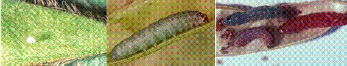
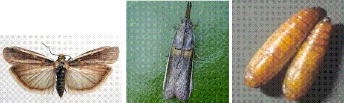

| Home |
| PEST OF PEAS |
MAJOR PESTS |
| 1. Pea Leaf-miner |
| 2. Pea Stem Fly |
| 3. Pea Aphid |
MINOR PESTS |
| 1. American Bollworm |
| 2. Pea Pod Borer |
| Questions |
| Download Notes |
PEAS :: MINOR PESTS:: PEA POD BORER
2. Pea Pod Borer: Etiella zinckenella (Pyralidae: Lepidoptera)
|  |
The larvae damage the crop by feeding on flowers and pods.
|  |
Management
Spray 750 ml of endosulfan 35 EC or 2.25 kg of carbaryl 50WP in 750 L of water per ha when the attack starts. Repeat after 15 days if necessary.